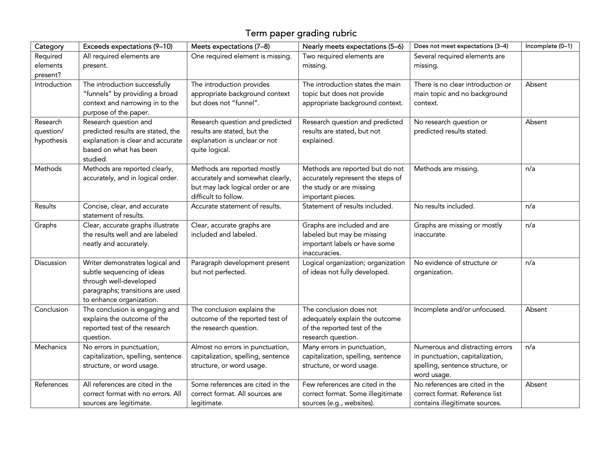
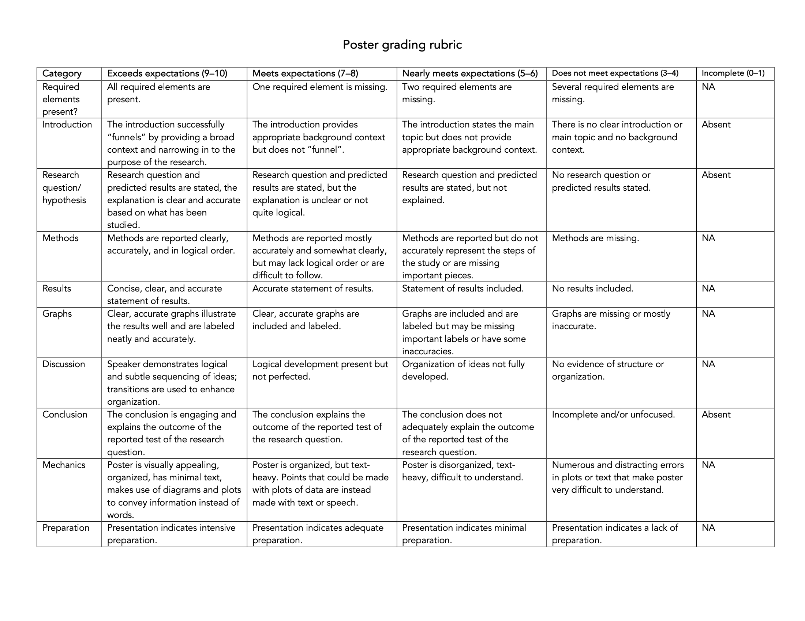

| Type | Assessment | Proportion of your final grade |
|---|---|---|
| Admin | Qualtrics survey - Before FISH 406 | 0% |
| Admin | Qualtrics survey - After FISH 406 | 0% |
| Exam | Midterm | 20% |
| Exam | Final (partially cumulative) | 20% |
| Quizzes | Weekly Canvas quizzes | 10% (1% per quiz, 11 quizzes total, lowest quiz grade gets dropped) |
| Term project | You choose a research question to address using the existing datasets | 1% (awarded for completing the assignment on time) |
| Term project | You submit a preliminary analysis, including first draft of Methods and Results sections | 1% (awarded for completing the assignment on time) |
| Term project | You submit a first draft of your research paper’s Introduction section | 1% (awarded for completing the assignment on time) |
| Term project | You submit a first draft of your 10-page research paper for peer review by a classmate | 1% (awarded for completing the assignment on time) |
| Term project | You provide peer review of classmate’s draft | 10% – peer review makes the science world go ’round. Here, you get to practice providing constructive suggestions to colleagues. |
| Term project | Classmate provides peer review of your draft | NA |
| Term project | You revise and give me the second draft | 1% (Awarded for completing the assignment on time. Your work on the term paper will not be graded until you submit the final version. This should give you the opportunity to put together a stellar paper, and lets you experience the iterative process of scientific writing.) |
| Term project | I hand draft back to you with feedback | NA |
| Term project | You give a 5-minute poster presentation of your findings | 10% |
| Term project | You hand in your final draft (10 pages double-spaced) | 15% |
| Lab notebook | Lab notebook | 10% – getting to know the parasites can be daunting. Careful scientific illustrations that are well-annotated help you to see the similarities, differences, and relationships among taxa, helping you to remember them. |
You will be able to access your grades via Canvas. All graded material will be returned promptly - no more than 10 days after submission date.
Regrade policy: If you believe that an exam or assignment has been graded incorrectly, or that the grade entered is incorrect, please contact Chelsea within one week of when the assignment is returned to you.
Late assignments are not accepted and will receive a grade of 0%. However, if you anticipate being unable to meet an assignment deadline, please shoot Chelsea an e-mail or speak to her before the deadline, as she is very happy to arrange accommodations for you in case of illness or other unexpected roadblocks.
Note that there will be no curve.
| Letter | Percent | GPA | Notes |
|---|---|---|---|
| A | ≥ 95 | 4.0 | |
| A | 94 | 3.9 | |
| A- | 93 | 3.8 | |
| A- | 92 | 3.7 | |
| A- | 91 | 3.6 | |
| A- | 90 | 3.5 | |
| B+ | 89 | 3.4 | |
| B+ | 88 | 3.3 | |
| B+ | 87 | 3.2 | |
| B | 86 | 3.1 | |
| B | 85 | 3.0 | |
| B | 84 | 2.9 | |
| B- | 83 | 2.8 | |
| B- | 82 | 2.7 | |
| B- | 81 | 2.6 | |
| B- | 80 | 2.5 | |
| C+ | 79 | 2.4 | |
| C+ | 78 | 2.3 | |
| C+ | 77 | 2.2 | |
| C | 76 | 2.1 | |
| C | 75 | 2.0 | |
| C | 74 | 1.9 | |
| C- | 73 | 1.8 | |
| C- | 72 | 1.7 | |
| C- | 71 | 1.6 | |
| C- | 70 | 1.5 | |
| D+ | 69 | 1.4 | |
| D+ | 68 | 1.3 | |
| D+ | 67 | 1.2 | |
| D | 66 | 1.1 | |
| D | 65 | 1.0 | |
| D | 64 | 0.9 | |
| D- | 63 | 0.8 | |
| D- | 62 | 0.7 | lowest passing grade |
| E | < 62 | 0.0 | academic failure, no credit earned |
A midterm and final will be administered in person and are closed-book. If you have a conflict with a scheduled exam, please let Chelsea know as soon as possible so that accommodations can be arranged. Cheating on these exams will constitute a violation of UW’s policy on academic integrity.
Want a better sense of what each exam will entail? Check out the practice midterm and the practice final. They mimic the actual exams in question format and content areas, although obviously the actual exams will be different from what is offered here.
Weekly, open-book Canvas quizzes are designed (1) to help you check in with your understanding of the material and (2) to indicate the most important materials to study for the midterm and final. Please feel free to consult your course materials as you take quizzes, as they are open-book. However, you are NOT allowed to collaborate with other students on the quizzes. Quizzes will be graded, and each weekly quiz counts for 1 point out of the 100 points that constitute your final grade. Your lowest quiz grade will be dropped. You are encouraged to use the quizzes as study tools for the midterm and final.
In FISH 406, you will have the opportunity to step into the role of a parasite ecologist, as you will conduct your very own independent research project (this is sometimes called a course-based undergraduate research experience or CURE)! By the end of the quarter, you will have chosen your research question, found an appropriate dataset with which to address that question, and conducted an analysis of that dataset. You will report your findings in a poster presentation and written report at the end of the quarter. You will write your term paper in scientific format, using the style of the member journal of the Ecological Society of America, Frontiers in Ecology and the Environment. At the end of the quarter, you will give a poster presentation on your findings. The poster will also be in scientific format (i.e., introduction, methods, results, discussion, delivered in-person during your lab section).
Conducting a scientific research project is a big undertaking, but your colleagues, TAs, and professor are here to help you through the process! Readings from your required text, How to Do Ecology, will help you along the way. You will write your research paper in sections, with deadlines distributed throughout the quarter to ensure that you have sufficient time to write carefully and thoughtfully. For each section, you will receive feedback within one week from your instructors. You will integrate this feedback into each section. Once all sections are written, you will compile them into a first draft, which you will submit for peer review by one of your classmates. You will then integrate your classmates’ feedback into the draft as you finalize the research paper for a final grade. You will have time to consult with your colleagues and TAs during lab, and you are always welcome to seek help from your TAs and professor outside of class and lab time. All scientific papers go through multiple, iterative rounds of review before they are published, and you will get to experience this process yourself. Our goal is provide you with all the support that you need to write a stellar manuscript, so don’t be afraid to reach out if you have questions or are struggling!
You are welcome to work on the analysis portion of this project solo or with a group; however, each student must create their own poster and paper, with no overlap in text between students. If text is repeated between students’ posters or papers, it will be considered plagiarism and handled according to course and university policies on academic integrity.
To help you start thinking about what scientific questions you might like to address in your research paper and seminar, next up is a brief overview of some available datasets:
Puget Sound parasites: We were interested in how the burden of parasites had changed in Puget Sound over time, so we dissected fish from the Burke Museum’s Fish Collection and identified all of their metazoan parasites - arthropods, flatworms, roundworms, and more. We found big changes in parasite burdens between 1880 and 2019, but there is still a lot more to discover in this dataset.
Human schistosomiasis in Senegal: We were interested in the most efficient ways to identify hotspots of schistosomiasis transmission in Senegal. We sampled humans and snails across several villages and found that the presence of floating vegetation was a strong predictor of human infections; that’s cool because floating vegetation can be measured by drones or even from satellites, making it easy to identify high-risk remote villages that could then be targeted for public health interventions. But there are lots of other questions that can be addressed in this dataset.
Global Burden of Disease dataset: The Institute for Health Metrics and Evaluation (IHME) compiles data on all causes of morbidity and mortality globally to produce the Global Burden of Disease dataset - the world’s “largest and most comprehensive effort to quantify health loss across places and over time”. This is a massive that spans many neglected tropical diseases from 1990 to present day. If you have questions about what factors contribute to the transmission of one or many NTDs, this is the dataset to check out.
Global trends in sushi worms: We wanted to know: is the problem of worms in sushi (i.e., nematodes in the family Anisakidae) getting better or worse through time? The answer is: worse. A lot worse. This meta-analytic dataset brings together results from many other studies spanning several decades and could be used to address lots of other questions.
Canned salmon parasites: The paper above suggests that sushi worms are on the rise, but the meta-analytic database on which it is based didn’t have any data from the North Pacific. That’s a problem for (1) the people who eat sushi from the region and (2) the marine mammals that live there. Without these data, how would we ever know whether the North Pacific has experienced the same rise in sushi worms as the rest of the world? Salmon tend not to get accessioned into museums (people much prefer to eat them), so we couldn’t use our old trick of dissecting museum specimens. The Seafood Products Association had a solution for us: a basement full of old canned salmon, stretching back to the 1970s. We discovered that the nematodes are detectable in these cans even after they are cooked, sealed, and sat on a shelf for 50 years. There has been an increase in anisakid burden for two of the four salmon species we investigated, but there is more to discover in this dataset.
Trends in Puget Sound sushi worms: Okay, so the news isn’t good if you’re a marine mammal: anisakid worms appear to be on the rise globally and in Alaskan waters. But what about our hometown ecosystem: Puget Sound? We looked at the abundance of anisakid worms in fish collected from Puget Sound and preserved in the UW Fish Collection and found an overall decline between 1920 and 2018 in the abundance of Contracaecum spp. worms, but a recent uptick starting in 1989, which was correlated with increasing harbor seal abundance. This dataset could be paired with historical environmental data from Puget Sound to address lots of other questions about sushi worms.
Lingcod parasites: We tried to solve the mystery of the blue lingcod! In other species, color polymorphisms are intimately linked with host–parasite interactions, which led us to ask whether blue coloration in lingcod might be associated with parasitism, either as cause or effect. The data suggest that the blue color polymorphism is linked to the nutrition of the host (and possibly associated with starvation), but this flexible dataset can be used to pursue many other questions about lingcod parasite burden, because it contains counts of all metazoan parasites of 89 lingcod individuals collected across more than 26 degrees of latitude from Alaska, Washington, and California.
Choose your own adventure: The datasets above are ones that have been used in the past by our lab, but there are lots of other parasite datasets out there. If there is a specific topic that you are interested in that isn’t represented by the datasets above, feel free to seek out another appropriate dataset. Good places to look are the data repositories Dryad, Zenodo, FigShare, etc. You will need to work closely with your TA to make sure that the data source you’re choosing is reputable and of sufficient quality for analysis, so if you choose this path, make sure to touch base early and often!
Here are some exemplary papers written by past generations of SAFS students, in response to a similar assignment. Note that these papers are not about parasites, but otherwise they are exactly what I want you to aim for!
Helen Casendino, “Consequences of sea star wasting on subtidal community structure in Puget Sound, Washington”
Charlotte Gerzanics, “Using growth models to explain Coho salmon numbers in the newly accessible habitat of Rock Creek”
Ben Gregory, “The effect of turbidity on the diet of longfin smelt (Spirinchus thaleichthys) in Lake Washington”
Delaney Lawson, “Species diversity and evenness in pool and riffle habitats of Rock Creek, Washington State, USA”
Josef Mayor, “Cutthroat trout as a despotic competitor in pool habitat”
Ryan Pittsinger, “Predicting juvenile sockeye salmon movement in Lake Washington using a diet analysis”
In Lab 4, we will get together to discuss your ideas for this project. Come with an idea, any idea, for a research question you would be interested in addressing and you will receive 1 point toward your final grade. If you’re having trouble coming up with research questions, go back to Chapters 1 and 2 of How to Do Ecology (required reading for Lab 4).
Through discussion, we will discover which students have similar interests, and based on this information your TA will suggest teams. Remember: teams are permitted to pursue the same research question and conduct analyses together, but must turn in separate posters and research papers with no overlap in text.
We’ll start by putting you in pairs. Each member of the pair will share their idea, and your job is to provide your partner with constructive, critical feedback that will help them hone and shape their idea. Then, we’ll get into larger groups, where you’ll share your idea with your peers and instructors; everyone will chime in with their suggestions for improvement. Then, we’ll group people together with similar interests to form teams. You may work solo on this project if you wish, but your TA will suggest ways in which groups can be formed to unite people who are interested in similar research questions.
Your preliminary analysis assignment should be a document containing preliminary answers to your research question. The document should include:
You will receive 1 point merely for submitting this assignment, but it is to your advantage to put a lot of effort into it. The further along your analysis is at this point in the quarter, the more your instructors can help you move it down the field toward an A in the final term paper!
What should this look like? See the examples above for inspiration.
But I didn’t collect these data! Not to worry. Today, data are everywhere, and many ecology papers present analyses of data that the authors did not themselves collect. The important thing is to make sure that you understand how the data were collected, so that you can make sure that they are appropriate for your research question and so that you can accurately report how the data were collected. Luckily, each one of the datasets above is accompanied by a paper (or website) that explains how the data were collected.
What do I do if I don’t have a strong command of statistics? Your statistics need not be sophisticated! This is a class on parasite ecology, not stats, so our goal is to meet you where you are in your statistics journey. Your instructors will help you hone and improve your statistics skills, whether you are an Excel beginner or advanced R user, and you will not be graded on the sophistication of your statistics.
Your Introduction section assignment should be at least four paragraphs and should provide the background and context for your research question and preliminary analysis. Please include your draft Methods, Results, and figures in this document (that will help us provide advice on whether you are tackling the right topics in your Introduction).
You will receive 1 point merely for submitting this assignment, but it is to your advantage to put a lot of effort into it. The further along your Introduction is at this point in the quarter, the more your instructors can help you move it down the field toward an A in the final term paper!
Your first draft assignment should contain an Introduction, Methods, Results (including at least one figure), and Discussion section.
You will receive 1 point merely for submitting this assignment, but it is to your advantage to put a lot of effort into it. The further along your first draft is at this point in the quarter, the more your peer reviewers can help you move it down the field toward an A in the final term paper!
Running late? Late first drafts will not receive the 1 point for this assignment. However, you should still submit your first draft even if it is late, because otherwise (1) you won’t receive your classmates’ first drafts to review, causing you to miss the 10 points for the peer review assignment and (2) you’ll miss the opportunity to get peer feedback on your own first draft.
Peer review makes the scientific world go ’round! You will receive the first drafts of two classmates and your assignment is to make both better. You will not be providing line edits on your colleague’s papers at this time, because your goal for this early draft is to engage with the content - not the grammar and spelling. This worksheet is designed to help you think deeply about the questions, hypotheses, tests, inferences, and logic of your colleague’s paper, and will help you provide feedback that is maximally useful to your colleagues.
For this assignment, you will be scored on the quality of the two peer reviews you perform. Complete one worksheet for each of the two papers you are assigned. In addition to providing written feedback to your colleagues, you will also perform another vital service: you will score their first draft using the term paper rubric, the same rubric that I will use to score the final drafts at the end of the quarter. By seeing how their first draft is likely to score on each dimension of the rubric, your colleagues will know where to invest their efforts as the revise their paper. The score you provide will not be used to grade your colleague in any way, shape, or form - it is merely for your colleague’s own information.
You will receive feedback from two classmates on your first draft and you’ll have one week to incorporate their suggestions into your term paper and create a second draft. You will be awarded 1 point toward your final grade for completing this assignment on time. Your work on the term paper will not be graded until you submit the final version. This should give you the opportunity to put together a stellar paper, and lets you experience the iterative process of scientific writing.

Your poster will be projected onto a screen and presented to your lab section. You’ll upload your poster file (as .ppt, .pptx, or .pdf) to Canvas, and your TA will display it via projector. You’ll stand alongside your poster and give a 5-minute overview as you might at a real poster session.

Adapted from Kuris, Whitney, and McKenzie Parasitology Lab Exercises, UC Santa Barbara
You are required to keep a lab notebook for this course. The notebook is worth 10% of your final grade. Your lab notebook grade will be broken down as follows:
Criterion = # points (out of 10)
If more than one lab is missing from your notebook, the 10 completion points will be forfeited. You are allowed to miss one lab and no points will be deducted if you are missing only one lab.
Materials: I suggest that you do your drawings and notes on good quality printer paper and keep the notebook in a three-ring binder. Composition books are also acceptable, but please use unlined paper only. Colored pencils are useful for labeling host and parasite anatomy.
Contents: Your notebook should emphasize the living organisms and dissections from the lab. A major part of this lab course is the study of fresh material, and we are fortunate to have access to these animals. A good record of your observations will be useful to you for studying and review and for any future research that you may do in parasitology or ecology. A table of contents must be included in your notebook.
Drawings: Artistic ability is not necessary to produce workable specimen drawings but don’t worry - you will not be graded on the quality of your artwork. However, you will need to develop your observation skills. Even the smallest protozoan parasites have morphological and anatomical details that facilitate their identification. Find a specimen that shows the details described by your instructor, adjust the focus and illumination for optimal viewing, and observe the specimen carefully before you draw. Drawings should be large enough to accommodate anatomical detail and clear labeling. Try sketching lightly in pencil and then trace over the lines that you want to keep for your finished drawing.
Drawings should include the following details:
The following observations are also recommended:
The more detail that you include in your notes and drawings, the more useful your lab notebook will be to you.